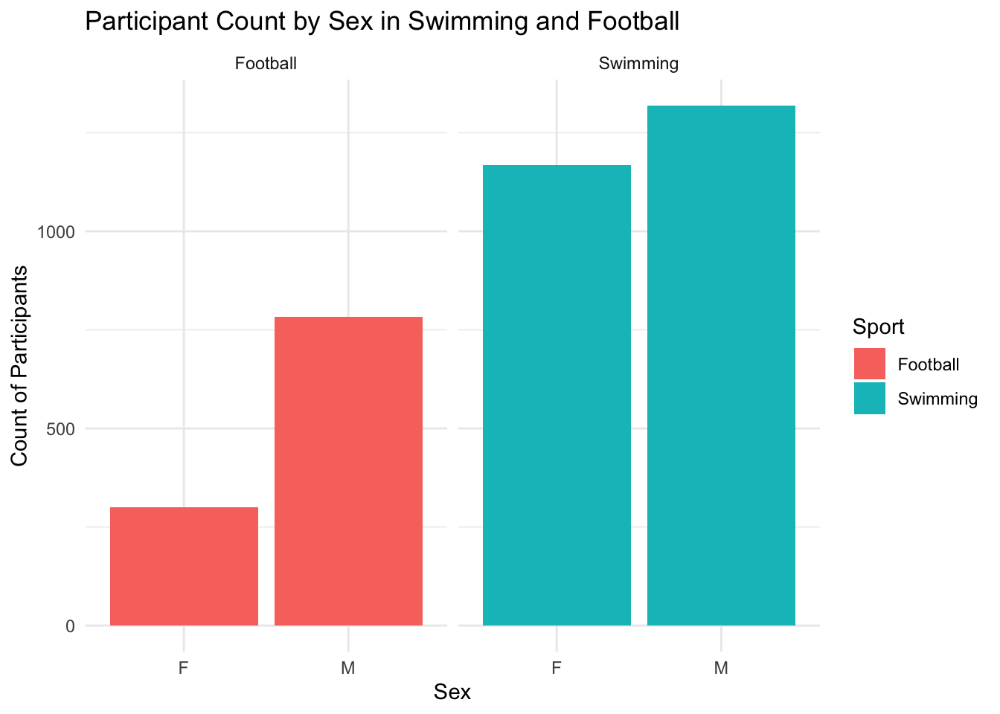
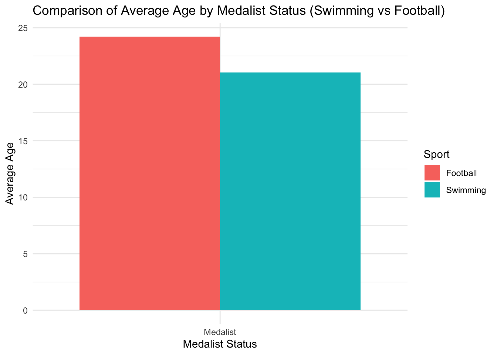
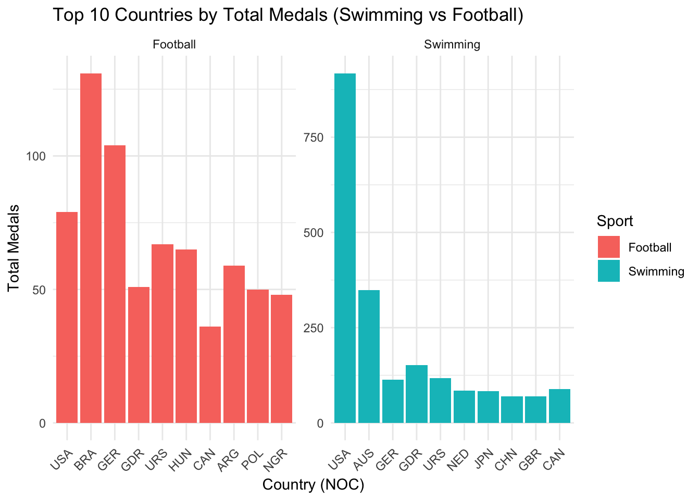

Rows: 271116 Columns: 15
── Column specification ────────────────────────────────────────────────────────
Delimiter: ","
chr (10): name, sex, team, noc, games, season, city, sport, event, medal
dbl (5): id, age, height, weight, year
ℹ Use `spec()` to retrieve the full column specification for this data.
ℹ Specify the column types or set `show_col_types = FALSE` to quiet this message.
#Package
library(tidyverse)
── Attaching core tidyverse packages ──────────────────────── tidyverse 2.0.0 ──
✔ dplyr 1.1.4 ✔ readr 2.1.5
✔ forcats 1.0.0 ✔ stringr 1.5.1
✔ ggplot2 3.5.1 ✔ tibble 3.2.1
✔ lubridate 1.9.3 ✔ tidyr 1.3.1
✔ purrr 1.0.2
── Conflicts ────────────────────────────────────────── tidyverse_conflicts() ──
✖ dplyr::filter() masks stats::filter()
✖ dplyr::lag() masks stats::lag()
ℹ Use the conflicted package (<http://conflicted.r-lib.org/>) to force all conflicts to become errors
library(ggplot2)library(dplyr)
Football <- olympics %>%filter(sport =="Football")%>%drop_na()Football
# A tibble: 1,084 × 15
id name sex age height weight team noc games year season city
<dbl> <chr> <chr> <dbl> <dbl> <dbl> <chr> <chr> <chr> <dbl> <chr> <chr>
1 37 "Ann Kr… F 23 182 64 Norw… NOR 1996… 1996 Summer Atla…
2 76 "Jouan … M 22 185 82 Came… CMR 2000… 2000 Summer Sydn…
3 669 "Joachi… M 18 181 73 Ghana GHA 1992… 1992 Summer Barc…
4 716 "Lautar… M 20 168 72 Arge… ARG 2008… 2008 Summer Beij…
5 785 "Darius… M 22 179 78 Pola… POL 1992… 1992 Summer Barc…
6 882 "Simon … M 17 180 79 Ghana GHA 1992… 1992 Summer Barc…
7 896 "Olubay… M 22 181 82 Nige… NGR 2008… 2008 Summer Beij…
8 908 "Ayodel… M 19 190 80 Nige… NGR 2008… 2008 Summer Beij…
9 918 "Ademir… M 24 179 74 Braz… BRA 1984… 1984 Summer Los …
10 918 "Ademir… M 28 179 74 Braz… BRA 1988… 1988 Summer Seoul
# ℹ 1,074 more rows
# ℹ 3 more variables: sport <chr>, event <chr>, medal <chr>
# A tibble: 2,486 × 15
id name sex age height weight team noc games year season city
<dbl> <chr> <chr> <dbl> <dbl> <dbl> <chr> <chr> <chr> <dbl> <chr> <chr>
1 259 "Reema … F 21 173 59 Cana… CAN 1984… 1984 Summer Los …
2 460 "Viktor… M 22 190 78 Sovi… URS 1972… 1972 Summer Muni…
3 460 "Viktor… M 22 190 78 Sovi… URS 1972… 1972 Summer Muni…
4 465 "Matthe… M 30 197 92 Aust… AUS 2016… 2016 Summer Rio …
5 509 "Gary A… M 21 175 64 Grea… GBR 1980… 1980 Summer Mosk…
6 980 "Rebecc… F 19 179 70 Grea… GBR 2008… 2008 Summer Beij…
7 980 "Rebecc… F 19 179 70 Grea… GBR 2008… 2008 Summer Beij…
8 980 "Rebecc… F 23 179 70 Grea… GBR 2012… 2012 Summer Lond…
9 980 "Rebecc… F 23 179 70 Grea… GBR 2012… 2012 Summer Lond…
10 1017 "Nathan… M 19 198 100 Unit… USA 2008… 2008 Summer Beij…
# ℹ 2,476 more rows
# ℹ 3 more variables: sport <chr>, event <chr>, medal <chr>
#Separate by sex
Swimming_Male <- Swimming %>%filter(sex =="M")Swimming_Female <- Swimming %>%filter(sex =="F")Football_Male <- Football %>%filter(sex =="M")Football_Female <- Football %>%filter(sex =="F")
Swimming$Sport <-"Swimming"Football$Sport <-"Football"Combined_Data <-bind_rows(Swimming, Football)ggplot(Combined_Data, aes(x = sex, fill = Sport)) +geom_bar(position ="dodge") +facet_wrap(~Sport) +labs(title ="Participant Count by Sex in Swimming and Football",x ="Sex",y ="Count of Participants",fill ="Sport" ) +theme_minimal()

#Compare average age, height, and weight of medalists vs non-medalists
`summarise()` has grouped output by 'Sport'. You can override using the
`.groups` argument.
Physical_Summary
# A tibble: 2 × 5
# Groups: Sport [2]
Sport Medalist Avg_Age Avg_Height Avg_Weight
<chr> <chr> <dbl> <dbl> <dbl>
1 Football Medalist 24.2 175. 70.7
2 Swimming Medalist 21.0 181. 73.3
ggplot(Physical_Summary, aes(x = Medalist, y = Avg_Age, fill = Sport)) +geom_col(position ="dodge") +labs(title ="Comparison of Average Age by Medalist Status (Swimming vs Football)",x ="Medalist Status",y ="Average Age",fill ="Sport" ) +theme_minimal()

#Evaluate the role of age and repeated participation in medal success
Filtered_Experience <- Filtered_Dataggplot(Filtered_Experience, aes(x = age, fill = Medalist)) +geom_density(alpha =0.5) +facet_wrap(~Sport) +labs(title ="Age Distribution for Medalists vs Non-Medalists (Swimming vs Football)",x ="Age",y ="Density",fill ="Medalist Status" ) +theme_minimal()
# A tibble: 20 × 3
# Groups: Sport [2]
noc Sport Total_Medals
<chr> <chr> <int>
1 BRA Football 131
2 GER Football 104
3 USA Football 79
4 URS Football 67
5 HUN Football 65
6 ARG Football 59
7 GDR Football 51
8 POL Football 50
9 NGR Football 48
10 CAN Football 36
11 USA Swimming 918
12 AUS Swimming 349
13 GDR Swimming 152
14 URS Swimming 118
15 GER Swimming 114
16 CAN Swimming 89
17 NED Swimming 85
18 JPN Swimming 84
19 CHN Swimming 70
20 GBR Swimming 70
Top_Countries <- Country_Dominance %>%group_by(.,Sport) %>%top_n(10, Total_Medals) %>%arrange(.,Sport)ggplot(Top_Countries, aes(x =reorder(noc, -Total_Medals), y = Total_Medals, fill = Sport)) +geom_col(position ="dodge") +facet_wrap(~Sport, scales ="free") +labs(title ="Top 10 Countries by Total Medals (Swimming vs Football)",x ="Country (NOC)",y ="Total Medals",fill ="Sport" ) +theme_minimal() +theme(axis.text.x =element_text(angle =45, hjust =1))

#Highlight differences and similarities between Swimming and Football
Comparison_Summary <- Filtered_Data %>%group_by(Sport) %>%summarise(Avg_Age =mean(age, na.rm =TRUE),Avg_Height =mean(height, na.rm =TRUE),Avg_Weight =mean(weight, na.rm =TRUE) )ggplot(Comparison_Summary, aes(x = Sport)) +geom_bar(aes(y = Avg_Age, fill ="Average Age"), stat ="identity", position ="dodge") +geom_bar(aes(y = Avg_Height /10, fill ="Average Height (scaled)"), stat ="identity", position ="dodge") +geom_bar(aes(y = Avg_Weight /10, fill ="Average Weight (scaled)"), stat ="identity", position ="dodge") +labs(title ="Comparison of Physical Attributes Between Swimming and Football",x ="Sport",y ="Scaled Metrics (Height and Weight divided by 10)",fill ="Metric" ) +theme_minimal()